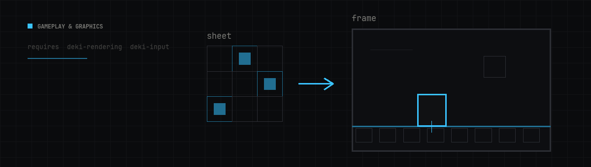

- Generated by
 1.18.0
1.18.0
|
deki-2d 0.40.0
Deki package reference
|

Sprites, text, animations, gradients, buttons, scrolling
Repository: github.com/dekiengine/deki-2d · Latest release: 0.40.0 · Needs engine 0.40.0+ · Requires: deki-rendering, deki-input
Install with DekiEditor --packages-add deki-2d <project>, or from the Package Manager. The engine's own components and C++ API are in the Deki docs.
Shown in the editor as 2D.
| Component | Category | Description |
|---|---|---|
| AnimationComponent | 2D | Plays a frame animation asset on the object's sprite. |
| ArcComponent | 2D | A round gauge or dial: a value shown as a stretch of a ring. |
| BarComponent | 2D | A bar that shows a value between a minimum and a maximum: health, loading, volume. |
| ButtonComponent | 2D | Makes the object a button: tracks hover and press, and fires a click callback. |
| ButtonStyleComponent | 2D | Gives a button its look per state, by tinting or by swapping sprites. |
| ChartComponent | 2D | A line or bar chart of a series of values. |
| CheckboxComponent | 2D | A box that ticks on and off, with a label. |
| ClipComponent | Core | Clips its children's rendering to a rectangle. |
| DatePickerComponent | 2D | A date picker: rollers for day, month and year. |
| DropdownComponent | 2D | A field that opens a list of options to pick one. |
| GradientComponent | 2D | Draws a procedural gradient: linear, radial or conical. |
| KeyboardComponent | 2D | A keyboard on the screen that types into a text box. |
| LedComponent | 2D | A round light with a colour, a brightness and a glow. |
| ListComponent | 2D | A scrolling column of rows to tap, with section titles. |
| MsgboxComponent | 2D | A dialog with a title, a message and buttons. |
| RollerComponent | 2D | Picker wheel: spins through a list of values with momentum and snaps to one. |
| ScrollComponent | 2D | Scrolls its children by dragging, with momentum. |
| ScrollElement | 2D | Declares one list item's size so its Scroll Component can lay the list out. |
| ShapeComponent | 2D | Draws a flat shape with smooth edges: rounded rectangle, ellipse, arc, triangle or tick. |
| SliderComponent | 2D | A bar with a knob to drag or step with the keys: volume, brightness. |
| SortingGroupComponent | 2D | Makes its children sort together as one unit against the rest of the scene. |
| SpinboxComponent | 2D | A number with minus and plus buttons. |
| SpinnerComponent | 2D | A busy indicator: an arc that runs round a ring. |
| SpriteBatchComponent | 2D | Draws many pieces of one sprite, each with its own place, frame and sorting order. |
| SpriteComponent | 2D | Draws a sprite, with tint, flip, and tiled or 9-slice modes. |
| SwitchComponent | 2D | An on/off switch with a sliding knob. |
| TabviewComponent | 2D | A row of tabs over pages, one page showing at a time. |
| TextComponent | 2D | Draws text with a bitmap font, alignment and word wrap. |
| TextareaComponent | 2D | A box to type text into, from a keyboard or one on screen. |
Parts you can leave out of a build. A feature with a define is switched there; the rest are stripped with their components.
| Feature | Define | Default |
|---|---|---|
| Sprites | DEKI_FEATURE_SPRITE | on |
| Text | DEKI_FEATURE_TEXT | on |
| Animation | DEKI_FEATURE_ANIMATION | on |
| Gradients | DEKI_FEATURE_GRADIENT | on |
| Buttons | DEKI_FEATURE_BUTTON | on |
| Scrolling | DEKI_FEATURE_SCROLL | on |
| Rollers | DEKI_FEATURE_ROLLER | on |
| Clipping | DEKI_FEATURE_CLIP | on |
| Sorting Groups | DEKI_FEATURE_SORTING_GROUP | on |
| Shapes | DEKI_FEATURE_SHAPE | on |
| Bars | DEKI_FEATURE_BAR | on |
| Sliders | DEKI_FEATURE_SLIDER | on |
| Switches | DEKI_FEATURE_SWITCH | on |
| Checkboxes | DEKI_FEATURE_CHECKBOX | on |
| LEDs | DEKI_FEATURE_LED | on |
| Arcs | DEKI_FEATURE_ARC | on |
| Spinners | DEKI_FEATURE_SPINNER | on |
| Spinboxes | DEKI_FEATURE_SPINBOX | on |
| Dropdowns | DEKI_FEATURE_DROPDOWN | on |
| Lists | DEKI_FEATURE_LIST | on |
| Tab Views | DEKI_FEATURE_TABVIEW | on |
| Message Boxes | DEKI_FEATURE_MSGBOX | on |
| Date Pickers | DEKI_FEATURE_DATE_PICKER | on |
| Text Areas | DEKI_FEATURE_TEXTAREA | on |
| On-Screen Keyboards | DEKI_FEATURE_KEYBOARD | on |
| Charts | DEKI_FEATURE_CHART | on |
Plays a frame animation asset on the object's sprite.
Inspector name: Animation Component · Category: 2D · Type: Deki2D::AnimationComponent
| Property | Type | Default | Description |
|---|---|---|---|
| animation | AssetRef (Animation) | "" | A frame animation asset, which lists the frames and how long each is held. |
| currentSequence | int32 | 0 | Which named sequence is playing, by index. Sequences are the separate animations inside one asset, such as idle and walk. |
| currentFrame | int32 | 0 | Frame within the current sequence. Set it to scrub; it is also useful to read while debugging. |
| isPlaying | bool | false | Whether the animation is advancing. Clearing this freezes it on the current frame rather than resetting it. |
| hasFinished | bool | false | Set when a non-looping sequence reaches its last frame. Read it to know when to move on. |
| playOnceOverride | bool | false | Play the current sequence once even if the asset marks it as looping. Cleared when the sequence changes. |
A round gauge or dial: a value shown as a stretch of a ring.
Inspector name: Arc Component · Category: 2D · Type: Deki2D::ArcComponent
| Property | Type | Default | Constraints | Description |
|---|---|---|---|---|
| inputCollider | ObjectRef (InputCollider) | 0 | The hit area that catches the drag. The editor adds one on the same object and sizes it to the ring. | |
| value | float | 40 | The value shown, between Min Value and Max Value. | |
| minValue | float | 0 | The value at the start of the ring. | |
| maxValue | float | 100 | The value at the end of the ring. | |
| step | float | 0 | Values snap to multiples of this from Min Value. 0 turns freely. | |
| size | float | 5 | in m | Diameter of the ring in meters. |
| thickness | float | 0.6 | in m | Thickness of the ring in meters. |
| startAngle | float | 3.92699 | in rad | Where the ring starts: the minimum. 0 points right; 225 degrees is the lower left, as on a gauge. |
| sweepAngle | float | 4.71239 | in rad | How far round the ring runs clockwise from the start. 270 degrees leaves a gap at the bottom. |
| interactive | bool | true | Lets the value be dragged and stepped with the keys. Off, the arc is a read-only gauge with no knob. |
A bar that shows a value between a minimum and a maximum: health, loading, volume.
Inspector name: Bar Component · Category: 2D · Type: Deki2D::BarComponent
| Property | Type | Default | Constraints | Description |
|---|---|---|---|---|
| value | float | 50 | The value shown, between Min Value and Max Value. | |
| minValue | float | 0 | The value at the empty end. | |
| maxValue | float | 100 | The value at the full end. | |
| orientation | enum | "Horizontal" | Horizontal, Vertical | Horizontal fills left to right; vertical fills bottom to top. |
| width | float | 8 | in m | Length of a horizontal bar, or thickness of a vertical one, in meters. |
| height | float | 0.75 | in m | Thickness of a horizontal bar, or length of a vertical one, in meters. |
| glideSpeed | float | 0 | 0 to 60 | How fast the fill glides to a new value. 0 jumps straight there; 10 settles in about a third of a second. |
Makes the object a button: tracks hover and press, and fires a click callback.
Inspector name: Button Component · Category: 2D · Type: Deki2D::ButtonComponent
| Property | Type | Default | Constraints | Description |
|---|---|---|---|---|
| inputCollider | ObjectRef (InputCollider) | 0 | The hit area that makes this button clickable. Without one the button has no way to notice a press. | |
| state | enum | "Normal" | Normal, Hovered, Pressed, Disabled | Normal, hovered, pressed or disabled. Set by input; a style component watches it to decide what to draw. |
| isEnabled | bool | true | A disabled button ignores input and reports the disabled state, so it can be greyed out rather than hidden. |
Gives a button its look per state, by tinting or by swapping sprites.
Inspector name: Button Style Component · Category: 2D · Type: Deki2D::ButtonStyleComponent
| Property | Type | Default | Constraints | Description |
|---|---|---|---|---|
| button | ObjectRef (ButtonComponent) | 0 | The button whose state drives this styling. Usually the button on the same object. | |
| sprite | ObjectRef (SpriteComponent) | 0 | The sprite this styling changes. Usually the sprite on the same object. | |
| transition | enum | "ColorTint" | ColorTint, SpriteSwap | Whether pressing swaps the tint colour or swaps the sprite outright. Colour is cheaper; separate sprites let the shape change. |
| normalColor | Color | "#FFFFFFFF" | shown when transition allows | Tint while the button is idle. |
| hoveredColor | Color | "#C8C8C8FF" | shown when transition allows | Tint while the pointer is over it. On a touch-only device this is rarely seen. |
| pressedColor | Color | "#A0A0A0FF" | shown when transition allows | Tint while it is held down. This is the feedback that tells someone the press registered. |
| disabledColor | Color | "#80808080" | shown when transition allows | Tint while the button is disabled. Usually faded or desaturated. |
| normalSprite | AssetRef (Sprite) | "" | shown when transition allows | Sprite while idle, in sprite-swap mode. |
| hoveredSprite | AssetRef (Sprite) | "" | shown when transition allows | Sprite while hovered, in sprite-swap mode. |
| pressedSprite | AssetRef (Sprite) | "" | shown when transition allows | Sprite while held, in sprite-swap mode. |
| disabledSprite | AssetRef (Sprite) | "" | shown when transition allows | Sprite while disabled, in sprite-swap mode. |
A line or bar chart of a series of values.
Inspector name: Chart Component · Category: 2D · Type: Deki2D::ChartComponent
| Property | Type | Default | Constraints | Description |
|---|---|---|---|---|
| kind | enum | "Line" | Line, Bars | A line through the points, or a bar for each. |
| points | Array<float> | [20.0, 45.0, 30.0, 60.0, 55.0, 80.0, 70.0] | The values, oldest first. AddPoint adds to the end. | |
| pointCount | int32 | 16 | 2 to 256 | How many points the chart holds. Past this, adding a point drops the oldest. |
| minValue | float | 0 | The value at the bottom edge. | |
| maxValue | float | 100 | The value at the top edge. | |
| gridLines | int32 | 4 | 0 to 16 | Horizontal grid lines across the chart. 0 for none. |
| lineWidth | float | 0.18 | in m | Thickness of the line in meters. |
| width | float | 12 | in m | Width of the chart in meters. |
| height | float | 6 | in m | Height of the chart in meters. |
A box that ticks on and off, with a label.
Inspector name: Checkbox Component · Category: 2D · Type: Deki2D::CheckboxComponent
| Property | Type | Default | Constraints | Description |
|---|---|---|---|---|
| inputCollider | ObjectRef (InputCollider) | 0 | The hit area that catches the tap. The editor adds one on the same object and sizes it to the box and label. | |
| isChecked | bool | false | Whether the box is ticked. | |
| isEnabled | bool | true | A disabled checkbox ignores taps and keys. | |
| label | string | "Checkbox" | The text beside the box. | |
| width | float | 8 | in m | Width of the box and its label together, in meters. |
| boxSize | float | 1.5 | in m | Size of the box in meters. The checkbox is this tall. |
| checkedColor | Color | "#408CFFFF" | Box colour while ticked. | |
| uncheckedColor | Color | "#8C92A0FF" | Outline colour while not ticked. |
Clips its children's rendering to a rectangle.
Inspector name: Clip Component · Category: Core · Type: Deki2D::ClipComponent
| Property | Type | Default | Constraints | Description |
|---|---|---|---|---|
| width | float | 6.25 | in m | Width of the clipping window in meters. Children are cut off at this edge. |
| height | float | 6.25 | in m | Height of the clipping window in meters. |
| sortingOrder | int32 | 0 | Draw order of the clipped group as a whole against everything outside it. |
A date picker: rollers for day, month and year.
Inspector name: Date Picker Component · Category: 2D · Type: Deki2D::DatePickerComponent
| Property | Type | Default | Constraints | Description |
|---|---|---|---|---|
| year | int32 | 2026 | The chosen year. | |
| month | int32 | 1 | 1 to 12 | The chosen month, 1 to 12. |
| day | int32 | 1 | 1 to 31 | The chosen day of the month, from 1. |
| minYear | int32 | 2000 | The earliest year on offer. | |
| maxYear | int32 | 2050 | The latest year on offer. | |
| order | enum | "DayMonthYear" | DayMonthYear, MonthDayYear, YearMonthDay | The order of the columns, as dates are written where the game is played. |
| monthNames | bool | true | Show months by name (Jan, Feb, ...) instead of by number. | |
| width | float | 11 | in m | Width of the date picker in meters. |
| rowHeight | float | 1.5 | in m | Height of one row in meters. The chosen row is a little taller. |
A field that opens a list of options to pick one.
Inspector name: Dropdown Component · Category: 2D · Type: Deki2D::DropdownComponent
| Property | Type | Default | Constraints | Description |
|---|---|---|---|---|
| inputCollider | ObjectRef (InputCollider) | 0 | The hit area of the closed field. The editor adds one on the same object and sizes it to the field. | |
| options | Array<string> | ["Easy", "Normal", "Hard"] | The choices, in order. | |
| selectedIndex | int32 | 0 | Which option is chosen, counting from 0. | |
| listRows | int32 | 4 | 1 to 12 | Rows the open list shows at once. With more options it scrolls. |
| isEnabled | bool | true | A disabled dropdown ignores taps and keys. | |
| width | float | 7 | in m | Width of the field and the list, in meters. |
| height | float | 1.75 | in m | Height of the field, and of each row of the list, in meters. |
Draws a procedural gradient: linear, radial or conical.
Inspector name: Gradient Component · Category: 2D · Type: Deki2D::GradientComponent
| Property | Type | Default | Constraints | Description |
|---|---|---|---|---|
| gradientType | enum | "Linear" | Linear, Radial, Conical | Linear runs the colours along the angle below. Radial runs them out from the centre point. |
| tileMode | enum | "None" | None, Horizontal, Vertical, Both, Mirror | What happens past the last stop: hold the end colour, repeat the ramp, or mirror it back. |
| ditherMode | enum | "Ordered4x4" | None, Ordered2x2, Ordered4x4, Ordered8x8, Ordered16x16 | Dithering hides the banding a smooth ramp shows on a 16-bit display, by trading it for a fine speckle. |
| ditherScale | uint8 | 1 | Size of the dither pattern in art pixels. 1 dithers pixel by pixel; 2, 4, 8 or 16 make chunkier blocks for a retro look. | |
| width | float | 0 | in m | Width of the gradient in meters. |
| height | float | 0 | in m | Height of the gradient in meters. |
| angle | float | 0 | in rad | Direction a linear gradient runs, in radians. 0 runs left to right. |
| centerX | float | 0.5 | Centre of a radial gradient across the width, 0 to 1. 0.5 is the middle. | |
| centerY | float | 0.5 | Centre of a radial gradient down the height, 0 to 1. | |
| radius | float | 0.5 | How far a radial gradient reaches before the last stop, relative to the size. | |
| stopCount | uint8 | 2 | How many of the four colour stops are used. The rest are ignored. | |
| stop1Position | float | 0 | Where the first stop sits along the ramp, 0 to 1. | |
| stop1Color | Color | "#FFFFFFFF" | Colour at the first stop. | |
| stop2Position | float | 1 | shown when stopCount allows | Where the second stop sits along the ramp, 0 to 1. |
| stop2Color | Color | "#000000FF" | shown when stopCount allows | Colour at the second stop. |
| stop3Position | float | 0 | shown when stopCount allows | Where the third stop sits, 0 to 1. Used when the stop count is 3 or more. |
| stop3Color | Color | "#000000FF" | shown when stopCount allows | Colour at the third stop. |
| stop4Position | float | 0 | shown when stopCount allows | Where the fourth stop sits, 0 to 1. Used when the stop count is 4. |
| stop4Color | Color | "#000000FF" | shown when stopCount allows | Colour at the fourth stop. |
| tileWidth | float | 0 | in m | Width of one repeat when the tile mode repeats or mirrors. |
| tileHeight | float | 0 | in m | Height of one repeat when the tile mode repeats or mirrors. |
Inherits sortingOrder, ignoreClip, pixelSnap, alphaMode from RendererComponent.
A keyboard on the screen that types into a text box.
Inspector name: Keyboard Component · Category: 2D · Type: Deki2D::KeyboardComponent
| Property | Type | Default | Constraints | Description |
|---|---|---|---|---|
| inputCollider | ObjectRef (InputCollider) | 0 | The hit area that catches presses on the keys. The editor adds one on the same object and sizes it to the keyboard. | |
| target | ObjectRef (TextareaComponent) | 0 | The text box the keys type into. | |
| mode | enum | "Lower" | Lower, Upper, Symbols | Lower case, upper case, or numbers and symbols. |
| isEnabled | bool | true | A disabled keyboard ignores presses. | |
| width | float | 19 | in m | Width of the keyboard in meters. |
| height | float | 7 | in m | Height of the keyboard in meters, four rows of keys. |
A round light with a colour, a brightness and a glow.
Inspector name: Led Component · Category: 2D · Type: Deki2D::LedComponent
| Property | Type | Default | Constraints | Description |
|---|---|---|---|---|
| color | Color | "#40DC78FF" | The colour of the light at full brightness. | |
| brightness | float | 1 | 0 to 1 (slider) | How bright the light is, 0 (dark) to 1. |
| isOn | bool | true | Off shows the light dark, whatever the brightness. | |
| size | float | 1 | in m | Diameter of the light in meters. |
| glow | float | 0.6 | 0 to 2 | How far the glow reaches past the light, as a share of its size. 0 for none. |
A scrolling column of rows to tap, with section titles.
Inspector name: List Component · Category: 2D · Type: Deki2D::ListComponent
| Property | Type | Default | Constraints | Description |
|---|---|---|---|---|
| items | Array<string> | ["# Audio", "Music", "Sound effects", "# Display", "Brigh... | The rows, top to bottom. One that starts with "\# " is a section title. | |
| visibleRows | int32 | 5 | 1 to 16 | Rows shown at once. With more items it scrolls. |
| isEnabled | bool | true | A disabled list ignores taps and keys. | |
| width | float | 8 | in m | Width of the list, in meters. |
| rowHeight | float | 1.5 | in m | Height of each row, in meters. |
A dialog with a title, a message and buttons.
Inspector name: Msgbox Component · Category: 2D · Type: Deki2D::MsgboxComponent
| Property | Type | Default | Constraints | Description |
|---|---|---|---|---|
| title | string | "Title" | The dialog's title. | |
| message | string | "Message" | The message under the title. Long lines wrap. | |
| buttons | Array<string> | ["OK", "Cancel"] | The button labels, left to right, up to three. The first is drawn as the main one. | |
| isOpen | bool | false | Whether the dialog shows. Open and Close set it from code; tick it to see the dialog while editing. | |
| closeOnEsc | bool | true | Esc closes the dialog as a cancel, with no button pressed. | |
| width | float | 14 | in m | Width of the dialog in meters. |
| height | float | 8 | in m | Height of the dialog in meters. |
Picker wheel: spins through a list of values with momentum and snaps to one.
Inspector name: Roller Component · Category: 2D · Type: Deki2D::RollerComponent
| Property | Type | Default | Constraints | Description |
|---|---|---|---|---|
| inputCollider | ObjectRef (InputCollider) | 0 | The hit area that catches the drag. Without one the roller cannot be spun. | |
| width | float | 6.25 | in m | Width of the roller in meters. |
| itemHeight | float | 1.875 | in m | Height of one unselected row, in meters. |
| visibleRows | int32 | 3 | How many rows are shown at once, including the selected one. Odd numbers centre the selection. | |
| infiniteScroll | bool | false | Wrap around from the last option to the first, so the roller spins without ends. | |
| reverseDrag | bool | false | Invert the drag direction. | |
| options | Array<string> | [] | The list of choices, in order. | |
| selectedIndex | int32 | 0 | Which option is currently chosen, counting from 0. | |
| deceleration | float | 0.95 | How quickly a flick slows down. Higher settles sooner. | |
| snapSpeed | float | 8 | How fast the roller settles onto the nearest option once it has slowed. Higher snaps harder. | |
| selectedItemHeight | float | 2.5 | in m | Height of the selected row, in meters. Making it taller than the others is what marks the selection. |
| selectedColor | Color | "#FFFFFFFF" | Text colour of the selected row. | |
| normalColor | Color | "#808080FF" | Text colour of the rows either side. | |
| selectedFontSize | int32 | 24 | Editor preview size for the selected row. The device draws at the font asset's baked size. | |
| normalFontSize | int32 | 16 | Editor preview size for the unselected rows. |
Scrolls its children by dragging, with momentum.
Inspector name: Scroll Component · Category: 2D · Type: Deki2D::ScrollComponent
| Property | Type | Default | Constraints | Description |
|---|---|---|---|---|
| inputCollider | ObjectRef (InputCollider) | 0 | The hit area that catches the drag. Without one nothing can scroll it. | |
| mode | enum | "NonTemplate" | NonTemplate, Template | Whether items come from the children already present or are spawned from the scene below as they are needed. |
| itemScene | AssetRef (Scene) | "" | shown when mode allows | Scene spawned once per item, in the spawning mode. Each copy is filled in as it scrolls into view. |
| direction | enum | "Vertical" | Vertical, Horizontal | Vertical or horizontal travel. |
| itemSpacing | float | 0 | in m | Gap between items in meters. |
| paddingTop | float | 0 | in m | Empty space before the first item, in meters. |
| paddingBottom | float | 0 | in m | Empty space after the last item, in meters. |
| paddingLeft | float | 0 | in m | Empty space at the left edge, in meters. |
| paddingRight | float | 0 | in m | Empty space at the right edge, in meters. |
| deceleration | float | 0.95 | How quickly a flick slows down. Higher stops sooner; lower keeps gliding. | |
| bounceStiffness | float | 0.15 | How hard the list springs back after being dragged past its end. Higher snaps back faster. | |
| enableBounce | bool | true | Let the list be dragged past its end and spring back. Off, it stops dead at the edge. | |
| enableInertia | bool | true | Keep moving after the finger lifts. Off, the list stops the moment the drag ends. | |
| reverseDrag | bool | false | Invert the drag direction, so content follows the finger the other way. |
Declares one list item's size so its Scroll Component can lay the list out.
Inspector name: Scroll Element · Category: 2D · Type: Deki2D::ScrollElement
| Property | Type | Default | Constraints | Description |
|---|---|---|---|---|
| width | float | 6.25 | in m | Width of one item in meters. The scroll uses it to work out spacing and how far it can travel. |
| height | float | 3.75 | in m | Height of one item in meters. |
Draws a flat shape with smooth edges: rounded rectangle, ellipse, arc, triangle or tick.
Inspector name: Shape Component · Category: 2D · Type: Deki2D::ShapeComponent
| Property | Type | Default | Constraints | Description |
|---|---|---|---|---|
| kind | enum | "Rectangle" | Rectangle, Ellipse, Arc, Triangle, Check, Custom | Which shape to draw. Custom draws what code writes into it. |
| width | float | 4 | in m | Width of the shape in meters. |
| height | float | 4 | in m | Height of the shape in meters. |
| color | Color | "#FFFFFFFF" | The colour the shape is drawn in. Its alpha fades the whole shape. | |
| cornerRadius | float | 0 | in m; shown when kind allows | Radius of the rounded corners in meters. Half the height makes a pill. |
| lineWidth | float | 0 | in m; shown when kind allows | 0 fills the shape. Above 0, only a line this thick is drawn along the inside of the edge. An arc and a tick are always lines; at 0 they pick a thickness from their size. |
| startAngle | float | 0 | in rad; shown when kind allows | Where the arc starts. 0 points right, and the arc runs counter-clockwise from here. |
| endAngle | float | 6.28319 | in rad; shown when kind allows | Where the arc ends. A full turn past the start draws a whole ring. |
| roundCaps | bool | false | shown when kind allows | Round the arc's ends instead of cutting them square. |
| direction | enum | "Down" | Down, Up, Left, Right; shown when kind allows | Which way the triangle points. |
Inherits sortingOrder, ignoreClip, pixelSnap, alphaMode from RendererComponent.
A bar with a knob to drag or step with the keys: volume, brightness.
Inspector name: Slider Component · Category: 2D · Type: Deki2D::SliderComponent
| Property | Type | Default | Constraints | Description |
|---|---|---|---|---|
| inputCollider | ObjectRef (InputCollider) | 0 | The hit area that catches the drag. The editor adds one on the same object and keeps it sized to the slider. | |
| step | float | 0 | Values snap to multiples of this from Min Value. 0 slides freely. | |
| keyStep | float | 0 | How far one key press moves the value. 0 moves it a twentieth of the range, or one step. | |
| knobSize | float | 1.5 | in m | Diameter of the knob in meters. |
| isEnabled | bool | true | A disabled slider ignores touch and keys. |
Inherits value, minValue, maxValue, orientation, width, height, glideSpeed from BarComponent.
Makes its children sort together as one unit against the rest of the scene.
Inspector name: Sorting Group Component · Category: 2D · Type: Deki2D::SortingGroupComponent
| Property | Type | Default | Description |
|---|---|---|---|
| sortingOrder | int32 | 0 | Draw order for this object's whole subtree, treated as one unit. Children keep their order relative to each other but the group moves together, which stops one child sorting between another group's children. |
A number with minus and plus buttons.
Inspector name: Spinbox Component · Category: 2D · Type: Deki2D::SpinboxComponent
| Property | Type | Default | Constraints | Description |
|---|---|---|---|---|
| inputCollider | ObjectRef (InputCollider) | 0 | The hit area that catches presses on the buttons. The editor adds one on the same object and sizes it to the spinbox. | |
| value | float | 0 | The number shown, between Min Value and Max Value. | |
| minValue | float | 0 | The lowest number. | |
| maxValue | float | 99 | The highest number. | |
| step | float | 1 | How much one press of a button changes the number. | |
| decimals | int32 | 0 | 0 to 4 | Digits shown after the decimal point. |
| wrap | bool | false | Past the highest number comes the lowest, and the other way round. | |
| isEnabled | bool | true | A disabled spinbox ignores presses and keys. | |
| width | float | 6.5 | in m | Width of the spinbox, buttons included, in meters. |
| height | float | 1.75 | in m | Height of the spinbox in meters. The buttons are square. |
A busy indicator: an arc that runs round a ring.
Inspector name: Spinner Component · Category: 2D · Type: Deki2D::SpinnerComponent
| Property | Type | Default | Constraints | Description |
|---|---|---|---|---|
| size | float | 2.5 | in m | Diameter of the spinner in meters. |
| thickness | float | 0.35 | in m | Thickness of the ring in meters. |
| arcLength | float | 1.5708 | in rad | How much of the ring the moving arc covers. |
| turnsPerSecond | float | 1 | -5 to 5 | Turns per second. Negative turns counter-clockwise. |
| isSpinning | bool | true | Off stops it where it is. |
Draws many pieces of one sprite, each with its own place, frame and sorting order.
Inspector name: Sprite Batch Component · Category: 2D · Type: Deki2D::SpriteBatchComponent
| Property | Type | Default | Description |
|---|---|---|---|
| sprite | AssetRef (Sprite) | "" | The image every piece is cut from, whole or out of a spritesheet. |
Inherits sortingOrder, ignoreClip, pixelSnap, alphaMode from RendererComponent.
Draws a sprite, with tint, flip, and tiled or 9-slice modes.
Inspector name: Sprite Component · Category: 2D · Type: Deki2D::SpriteComponent
| Property | Type | Default | Constraints | Description |
|---|---|---|---|---|
| sprite | AssetRef (Sprite) | "" | The image to draw. Sprites come from a texture asset, either whole or cut out of a spritesheet. | |
| tintColor | Color | "#FFFFFFFF" | Multiplied into every pixel. White leaves the image alone; darker tints shade it, and the alpha fades it out. | |
| renderMode | enum | "Normal" | Normal, Tiled, NineSlice | Normal draws the sprite once. Tiled repeats it to fill the size below. Nine-slice stretches the middle and leaves the corners intact, which is what you want for panels and buttons. |
| flipHorizontal | bool | false | Mirror left to right. Cheaper than a second sprite and the usual way to face a character the other way. | |
| flipVertical | bool | false | Mirror top to bottom. | |
| width | float | 0 | in m; shown when renderMode allows | Drawn size in meters. Left at 0 the sprite's own pixel size is used, converted through the project's pixels-per-meter. |
| height | float | 0 | in m; shown when renderMode allows | Drawn size in meters. Left at 0 the sprite's own pixel size is used, converted through the project's pixels-per-meter. |
Inherits sortingOrder, ignoreClip, pixelSnap, alphaMode from RendererComponent.
An on/off switch with a sliding knob.
Inspector name: Switch Component · Category: 2D · Type: Deki2D::SwitchComponent
| Property | Type | Default | Constraints | Description |
|---|---|---|---|---|
| inputCollider | ObjectRef (InputCollider) | 0 | The hit area that catches the tap. The editor adds one on the same object and sizes it to the switch. | |
| isOn | bool | false | Whether the switch is on. | |
| isEnabled | bool | true | A disabled switch ignores taps and keys. | |
| width | float | 3 | in m | Width of the switch in meters. |
| height | float | 1.6 | in m | Height of the switch in meters. |
| onColor | Color | "#408CFFFF" | Track colour while on. | |
| offColor | Color | "#3A3F4BFF" | Track colour while off. | |
| glideSpeed | float | 14 | 0 to 60 | How fast the knob slides across. 0 jumps. |
A row of tabs over pages, one page showing at a time.
Inspector name: Tabview Component · Category: 2D · Type: Deki2D::TabviewComponent
| Property | Type | Default | Constraints | Description |
|---|---|---|---|---|
| tabs | Array<string> | ["One", "Two", "Three"] | The tab titles, in order. Each has a page, Page0, Page1 and so on. | |
| selectedTab | int32 | 0 | Which tab shows, counting from 0. | |
| isEnabled | bool | true | A disabled tab view ignores taps and keys. | |
| width | float | 16 | in m | Width of the tab view in meters. |
| height | float | 10 | in m | Height of the tab view, the tab bar included, in meters. The pages fill the rest. |
| barHeight | float | 1.75 | in m | Height of the tab bar in meters. |
| glideSpeed | float | 14 | 0 to 60 | How fast the line under the tabs slides to a new tab. 0 jumps. |
Draws text with a bitmap font, alignment and word wrap.
Inspector name: Text Component · Category: 2D · Type: Deki2D::TextComponent
| Property | Type | Default | Constraints | Description |
|---|---|---|---|---|
| text | string | "" | The string to draw. Newlines start a new line, and with a width set, lines wrap between words to fit it. | |
| font | AssetRef (BitmapFont) | "" | A TrueType or BDF font asset. Font Size picks the size a TrueType font is drawn at. | |
| fontSize | int32 | 16 | 6 to 128 | Font size in pixels. The editor bakes the font at this size the first time a text uses it, and a build ships the sizes its texts use. |
| width | float | 6.25 | in m | Width of the text box in meters. Alignment is measured against this, so it matters even when the text is shorter. |
| height | float | 1.5 | in m | Height of the text box in meters. Vertical alignment is measured against this. |
| color | Color | "#FFFFFFFF" | Colour of the glyphs. | |
| decorationColor | Color | "#000000FF" | Colour of the outline or shadow, when the font asset was baked with one. Ignored by a plain font. | |
| pixelScale | int32 | 1 | Whole-number magnification. 2 draws every glyph pixel as a 2x2 block, which keeps a pixel font crisp instead of blurring it. | |
| align | enum | "Left" | Left, Center, Right | Horizontal placement inside the width above. |
| verticalAlign | enum | "CapCenter" | Top, Middle, Bottom, CapCenter, XCenter, TypoCenter, Baseline | Vertical placement inside the height above. Cap-centre lines up the capital letters, which usually looks centred to the eye; true centre includes descenders. |
Inherits sortingOrder, ignoreClip, pixelSnap, alphaMode from RendererComponent.
A box to type text into, from a keyboard or one on screen.
Inspector name: Textarea Component · Category: 2D · Type: Deki2D::TextareaComponent
| Property | Type | Default | Constraints | Description |
|---|---|---|---|---|
| inputCollider | ObjectRef (InputCollider) | 0 | The hit area that takes the tap that starts typing. The editor adds one on the same object and sizes it to the box. | |
| text | string | "" | The text typed so far. | |
| placeholder | string | "Type here" | Shown dimmed while the box is empty. | |
| maxLength | int32 | 32 | 0 to 1024 | The most characters it takes. 0 for no limit. |
| oneLine | bool | true | One line: Enter submits. Off, Enter starts a new line and long lines wrap. | |
| password | bool | false | Shows a star for each character instead of the text. | |
| isEnabled | bool | true | A disabled box ignores taps and typing. | |
| width | float | 10 | in m | Width of the box in meters. |
| height | float | 1.75 | in m | Height of the box in meters. |
Earlier releases: CHANGELOG.md.
Generated from the package's reflection data (engine 0.40.0). Property names are the keys used in scene files. Renames keep an alias (compatibility).